Projeto, instalação e manutenção de sistemas de grande capacidade em Campina Grande e região. E o split da sua casa, com o mesmo rigor.
Três coisas acontecem, sempre nessa ordem.
Filtro sujo, serpentina saturada e gás fora de carga: o equipamento passa a trabalhar dobrado para entregar o mesmo frio.
Falar sobre isso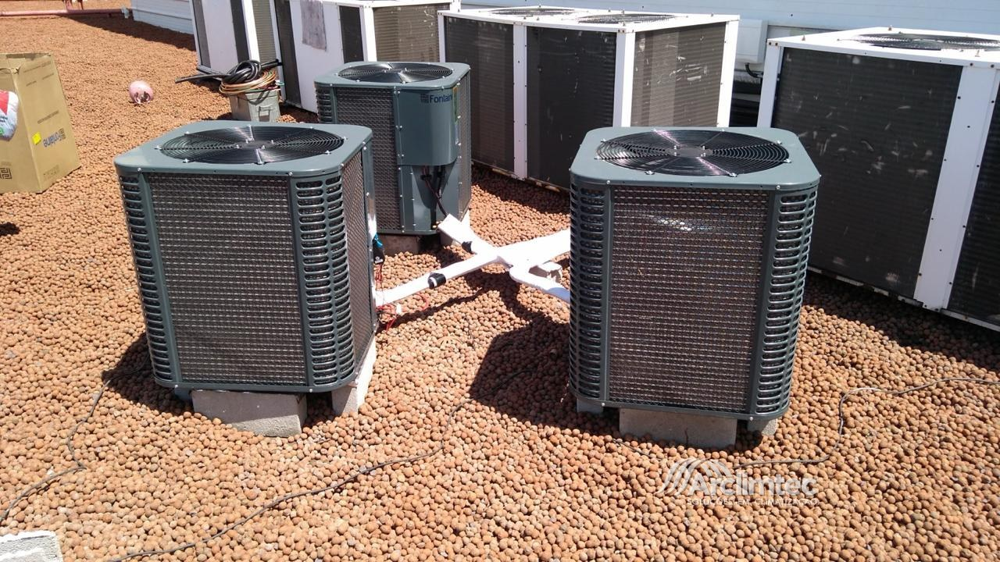
Cheiro, poeira e reclamação no balcão. Quase sempre é higienização atrasada — e, em ambiente de uso coletivo, é também exposição legal sem PMOC.
Falar sobre isso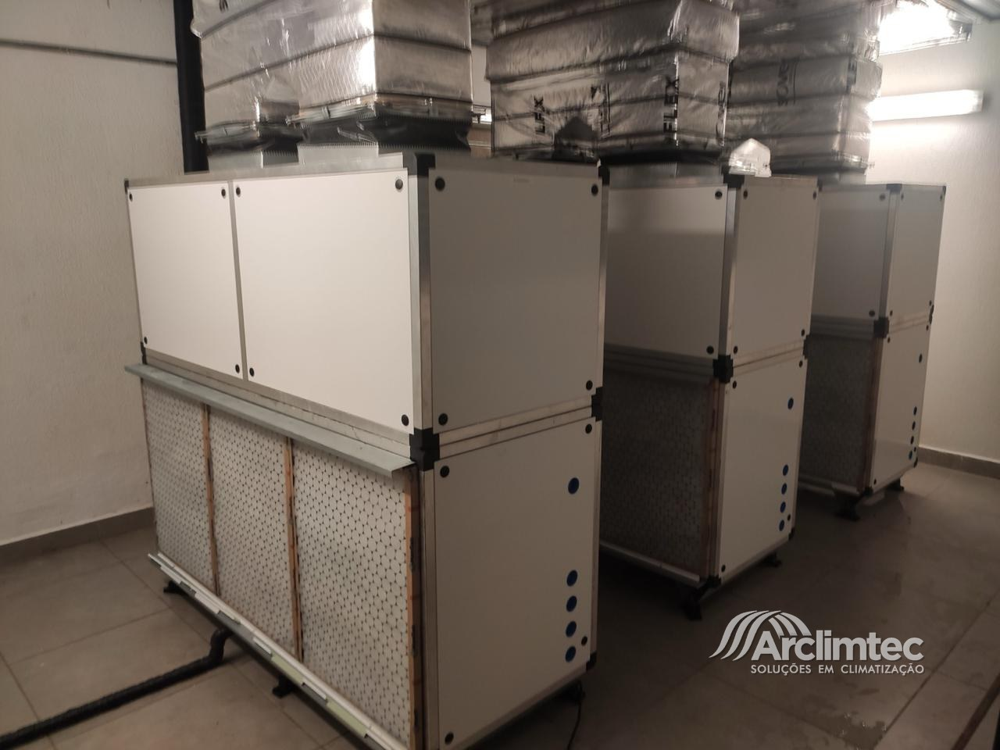
Sem plano preventivo e sem histórico do equipamento, cada mês vem um técnico diferente e o mesmo defeito sempre volta.
Falar sobre isso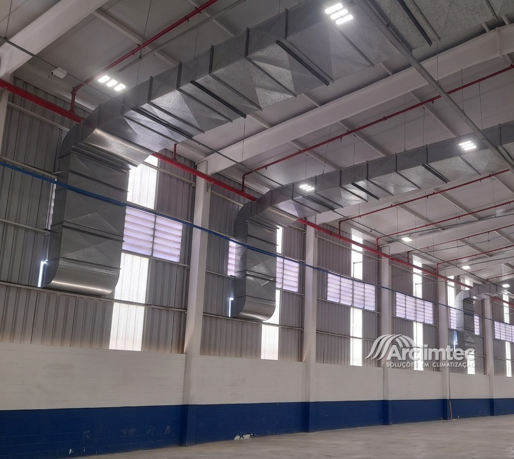
Dimensionar antes de instalar, medir antes de entregar, documentar depois de manter.
Equipe própria: o mesmo time que projeta, instala e volta na manutenção.
Indústria, galpão, shopping, supermercado, hospital, escola e prédio corporativo.
Falar no WhatsAppCasas, apartamentos e escritórios — instalação limpa e ar saudável.
Falar no WhatsApp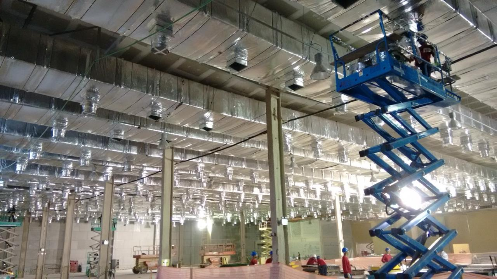
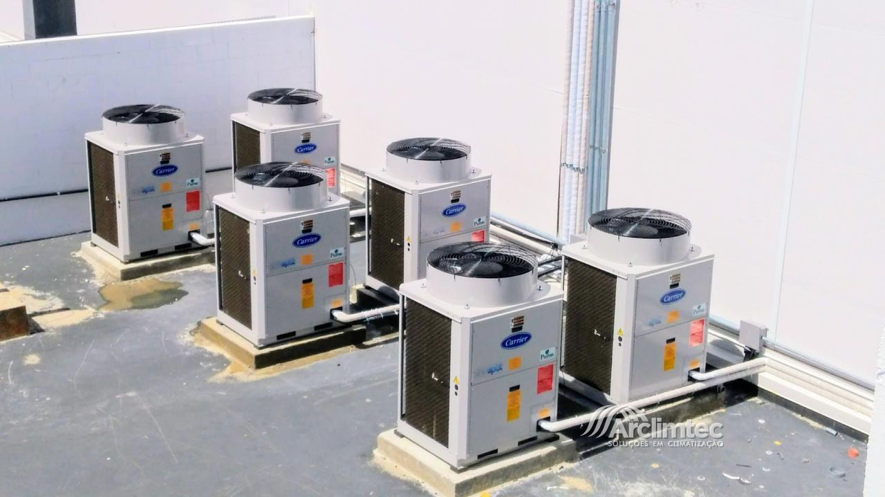
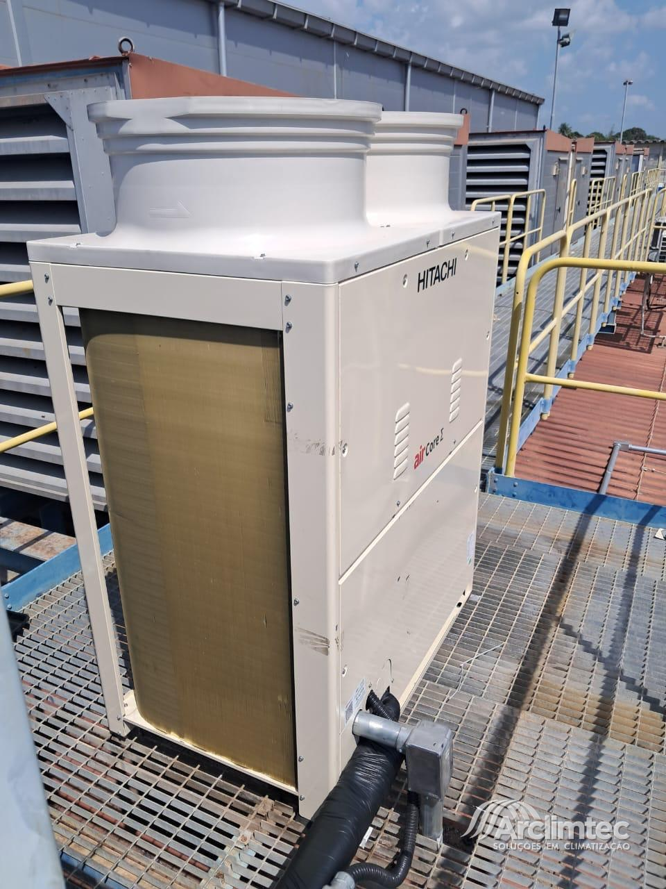
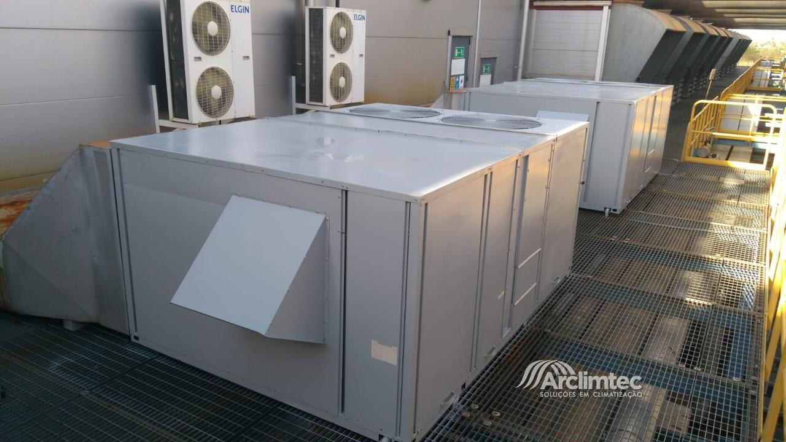
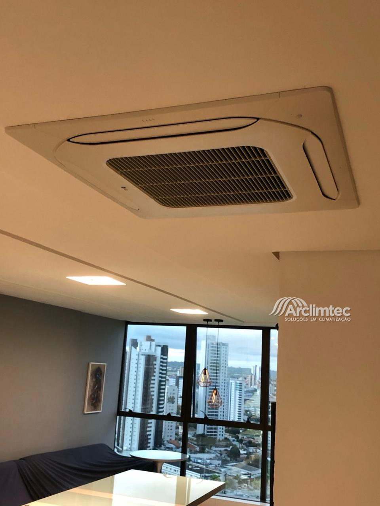
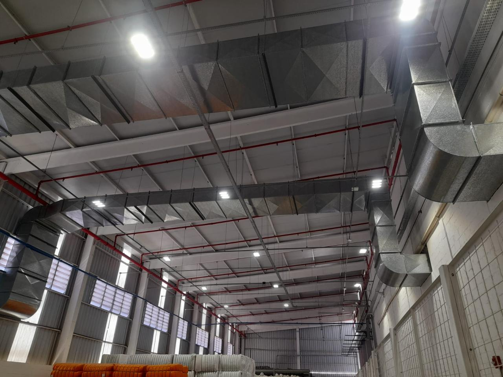
Climatização tratada como engenharia, em Campina Grande — indústrias, redes comerciais, saúde e residências.
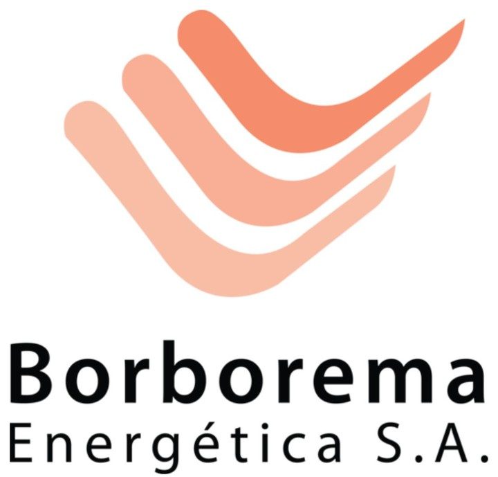
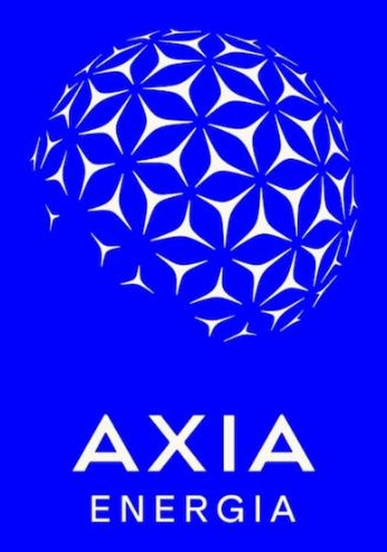
Manda a planta, a conta de luz ou só a dúvida. A gente avalia, dimensiona e devolve orçamento com escopo claro.